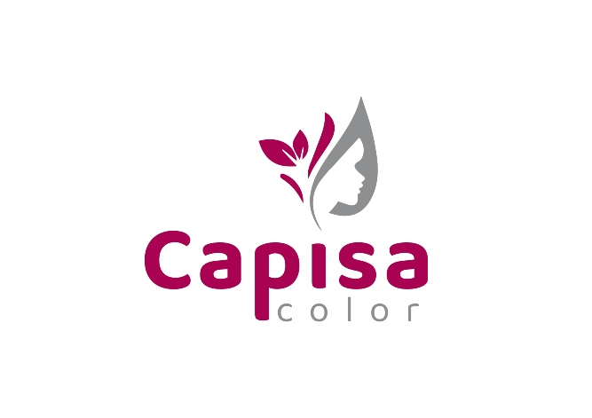
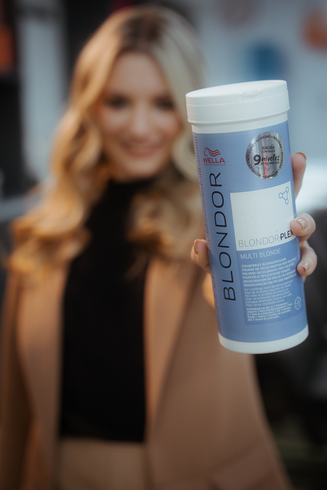

Capisa Color
Productos para Perfumerias, Peluquerias y Farmacias
Blondor Plex
Los creadores de vínculos se han convertido en un aditivo básico en muchos tratamientos de aclarado. Wella presenta por primera vez nuestro polvo de aclarado con tecnología de creación de vínculos incluida. El nuevo y revolucionario BlondorPlex, de preparación sencilla y hasta un 97 % menos de rotura capilar* sin afectar al aclarado.
Diseñado con la tecnología BlondorPlex para no comprometer la aclaración. La fórmula premezclada ahorra tiempo de preparación en el salón (no se necesita aditivo). Perfecto para servicios de aclaración premium (excepto aplicación a mano alzada).